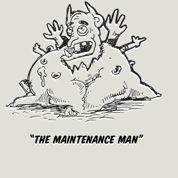

Pow prevails over the forces of evil.
Configuration files are a bitch. A few simple conventions eliminate the need for tedious configuration. Pow runs as your user on an unprivileged port, and includes both an HTTP and a DNS server. The installation process sets up a firewall rule to forward incoming requests on port 80 to Pow. It also sets up a system hook so that all DNS queries for a special top-level domain (.dev) resolve to your local machine.

Maintenance is a bitch. A few simple conventions eliminate the need for tedious configuration. Pow runs as your user on an unprivileged port, and includes both an HTTP and a DNS server. The installation process sets up a firewall rule to forward incoming requests on port 80 to Pow. It also sets up a system hook so that all DNS queries for a special top-level domain (.dev) resolve to your local machine.
Installing multiple Ruby is a bitch. A few simple conventions eliminate the need for tedious configuration. Pow runs as your user on an unprivileged port, and includes both an HTTP and a DNS server. The installation process sets up a firewall rule to forward incoming requests on port 80 to Pow. It also sets up a system hook so that all DNS queries for a special top-level domain (.dev) resolve to your local machine.